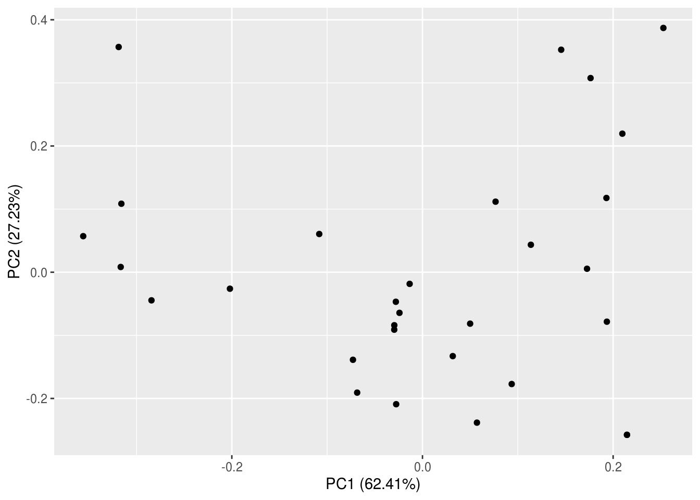
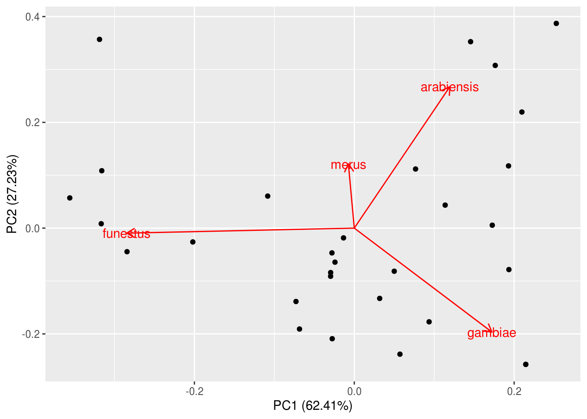
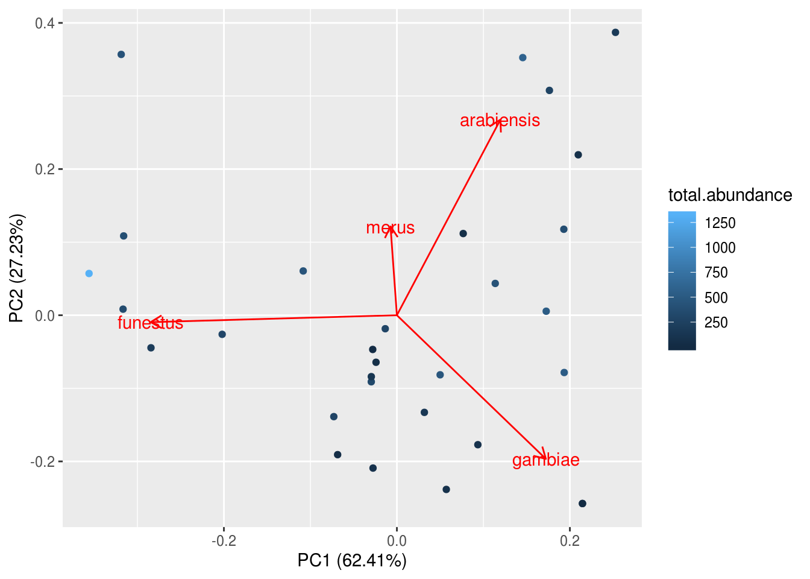
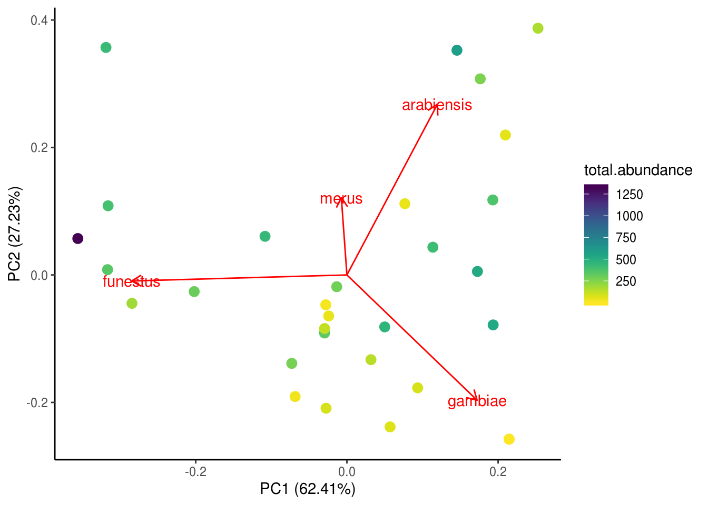
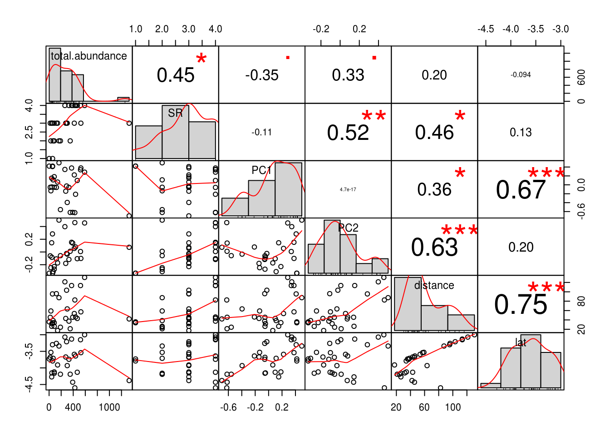
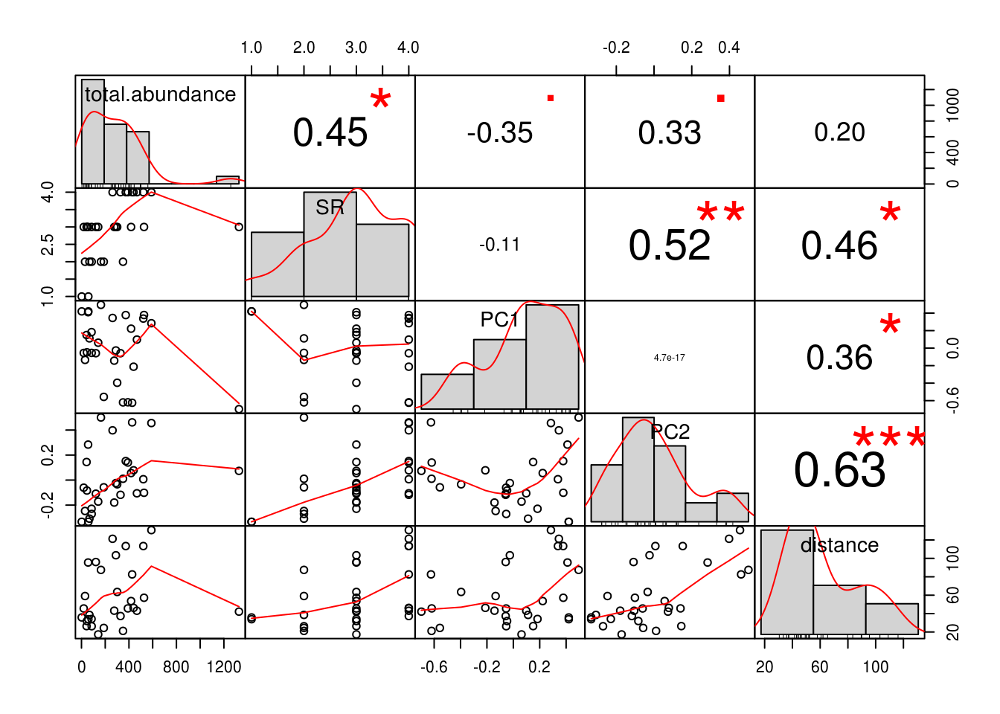
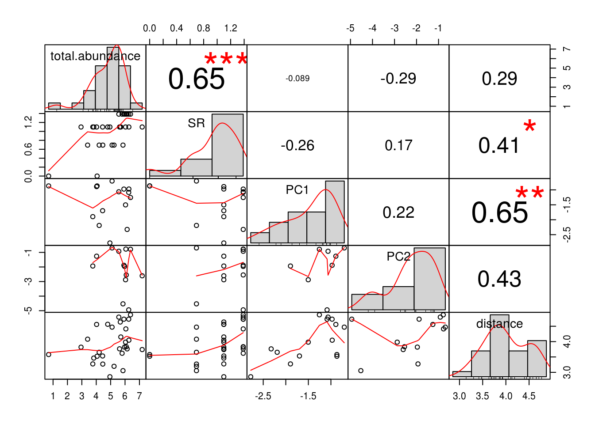
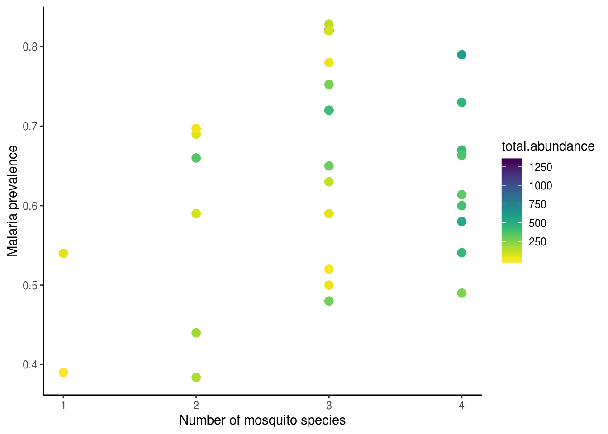

Lesson objectives:
- Most things in EEB are correlated - what does that do to our analyses?
- Use multivariate techniques to reduce complex situtations into more manageable ones
- Run multivariate multiple regressions with structural equation models
- Understand that a very long list of caveats come with using each of these techniques
- Bottomline: integrity is the number one virtue to being a good researcher
Lesson outline:
Total lesson time: 2 hours
- Introduction to dataset and hypotheses (10 min)
- Performing ordination on species data (30 min)
- Inspect multicollinearity (20 min)
- A very brief introduction to structural equation models (40 min)
Ecologists are obsessed with patterns in nature. It is thus great news that most things in nature are correlated with one another - that’s why we all still have jobs. However, this is also bad news, because when things are correlated, it becomes difficult to tease part which effects came from where.
Take this simple example of something we can all relate to – food.
You love spicy food. To satisfy your craving, you made this very spicy dish with five different kinds of chili peppers. It was a very delicious dish! It has this real depth of flavor, and needless to say, spicy! Then you find yourselves wondering where is the heat actually coming from anyway? Was it the habanero? The Scotch bonnet? There was a little bit of smokiness, perhaps that was chipotle? That was a difficult question because all of the ingredients you put in have a similar flavor profile – spicy.
In today’s lecture, we’ll be working through a real-life –- read: it’s gonna be messy –- example of how different multivariate techniques can be used to distinguish between the flavor profile of different chili peppers disentangle the effects of highly correlated variables.
The overarching question we will be tackling today is whether vector diversity mattered to malaria transmission. Did you know that malaria parasites, Plasmodium spp., can infect up to 70 mosquito species? These vector species were not created equal in terms of their capacity to transmit disease as they often differ in traits such as life history, phenology, and feeding preference. Thus, neglected details of vector diversity can have important consequences for disease dynamics. There are many ways in which “diversity” can be measured: abundance, species richness, and composition. Which one of these axes of diversity really mattered, and how much does it matter?
Here are the packages we will be using today:
library(tidyverse)
library(MASS)
library(PerformanceAnalytics)
library(MuMIn)
library(ggfortify)
library(lavaan)
library(viridis)In addition, we will also be sourcing some functions provided by Zuur et al. (2009). The full reference can be found at the end of this document.
# Original link http://highstat.com/Books/BGS/GAMM/RCodeP2/HighstatLibV6.R
source("https://raw.githubusercontent.com/UofTCoders/rcourse/master/resources/HighstatLibV6.R")And here is the data we will be working with:
The data used in this analysis was collected by Mbogo and colleagues in 1998 and published in their 2003 manuscript. In brief, these researchers conducted entomological and epidemiological surveys at 30 villages along the eastern Kenyan coast in 1998. Overnight human-landing catches were performed in ten huts per village every two months over the course of the year-long study. Mosquito species were identified via molecular methods, and their abundances were recorded. At the end of the vector survey period (May 1998), 76-100 school children (ages 6-12) were sampled for malaria at each village. Malaria prevalence was estimated as the proportion of samples that showed blood-stage parasites in stained blood smears. P. falciparum was found to be responsible for more than 95% of the malaria cases in this region, and thus is the only parasite species considered here. The longitudinal mosquito diversity data was aggregated to match the cross-sectional nature of the malaria prevalence data.
The data relevant to our analysis thus consisted of the following:
The unit of replication in this study, i.e. the smallest scale at which information on variation is available, is “village”, bringing the total sample size to 30.
Let’s have a look at the data, and start to organize our analysis.
## # A tibble: 6 x 15
## site.id gambiae funestus arabiensis merus lat long site.name
## <dbl> <dbl> <dbl> <dbl> <dbl> <dbl> <dbl> <chr>
## 1 24 0.0751 0.930 0.00152 0 -4.38 39.5 Magaoni
## 2 2 0.399 0.0238 0.282 0.295 -3 40.2 Garithe
## 3 3 0.905 0.0190 0.0759 0 -3.54 39.6 Kagombani
## 4 4 0.837 0.0345 0.109 0.0192 -3.15 40.2 Majenjeni
## 5 21 0.784 0.171 0.0407 0.00428 -4.13 39.3 Amani
## 6 14 0.444 0.467 0.0615 0.0273 -3.64 39.7 Jaribuni
## # … with 7 more variables: total.abundance <dbl>, PfPOS <dbl>, PfNEG <dbl>,
## # PfEX <dbl>, PfPR <dbl>, distance <dbl>, SR <dbl>At the moment, we have four predictors that relate to “vector community structure” (i.e., those four columns containing species relative abundance info), and that is a lot! How can we reduce this to something simpler to use in our regressions?
The first multivariate technique we are going to work with today is ordination. As the name may suggest, ordination is a way of organizing things into a particular order, typically based on how similar things are in some aspect. In this case, we will be organizing our sites based on how similar they are in vector species composition.
One of the most common ordination techniques used by ecologists is the Principle Components Analysis (PCA). A PCA seeks to find a new coordinate system (PC axes) that best accounts for the variation in multivariate data space, thus reducing dimensionality in the process.
The procudure to conduct a PCA is as follows:
Easy peasy, right? PCA is in fact a fairly straightforward and automatic analysis in R. We just have to give R the appropriate object, do a little of bit of transformation to ensure our results are not disproportionately affected by any outliers (i.e., rare species), and we are good to go!
kenya.pca <- kenya.wide %>%
dplyr::select(arabiensis, gambiae, funestus, merus) %>% # Choose relevant columns
mutate_all(sqrt) %>% # Hellinger transformation
prcomp(.) # Pipe directly into base R function for PCAThese lines of code returns the result of our simple PCA. Use str() and summary() for a quick initial inspection of this object.
## Importance of components:
## PC1 PC2 PC3 PC4
## Standard deviation 0.3574 0.2361 0.11994 0.08256
## Proportion of Variance 0.6241 0.2723 0.07029 0.03330
## Cumulative Proportion 0.6241 0.8964 0.96670 1.00000This gives us a table summary of variance explained by each axes. R even did the math for us and showed cumulative variance explained as we move to the higher dimensions, so convenient! We see that the first two PC axes already explained close to 90% of the variation of the data, that’s pretty good! We will therefore only be using these two axes in subsequent analyses, and have successfully reduced our community composition measure from four variables to two!
## List of 5
## $ sdev : num [1:4] 0.3574 0.2361 0.1199 0.0826
## $ rotation: num [1:4, 1:4] 0.3384 0.4869 -0.805 -0.0208 0.7567 ...
## ..- attr(*, "dimnames")=List of 2
## .. ..$ : chr [1:4] "arabiensis" "gambiae" "funestus" "merus"
## .. ..$ : chr [1:4] "PC1" "PC2" "PC3" "PC4"
## $ center : Named num [1:4] 0.2259 0.7328 0.4532 0.0754
## ..- attr(*, "names")= chr [1:4] "arabiensis" "gambiae" "funestus" "merus"
## $ scale : logi FALSE
## $ x : num [1:30, 1:4] -0.6967 0.2849 0.3787 0.3379 0.0979 ...
## ..- attr(*, "dimnames")=List of 2
## .. ..$ : NULL
## .. ..$ : chr [1:4] "PC1" "PC2" "PC3" "PC4"
## - attr(*, "class")= chr "prcomp"We see that this object is structured as a five-item list. We mostly care about two of these items:
To inspect these items, use the $ notation.
## PC1 PC2 PC3 PC4
## arabiensis 0.33840120 0.75670838 -0.43923364 -0.3463392
## gambiae 0.48686812 -0.55562455 -0.05229353 -0.6719421
## funestus -0.80499055 -0.02683509 -0.23865264 -0.5425081
## merus -0.02083931 0.34344384 0.86451380 -0.3663713Basically, species loadings show how much of the original species info contributed to each new axes. For example, we see that the species An. funestus loaded the most strongly on to PC1, followed by An. arabiensis and An. gambiae in the opposite direction. This means that sites with relatively more An. funestus will tend to have relatively few An. arabiensis and An. gambiae, but this antagonism is not balanced (due to weaker loading of arabiensis and gambiae onto this axes). As a mini challenge, interpret PC2 loadings.
## PC1 PC2 PC3 PC4
## [1,] -0.69671568 0.073905651 -8.107273e-02 0.123277513
## [2,] 0.28487808 0.455836972 3.474136e-01 -0.046968389
## [3,] 0.37866982 -0.101288160 -2.309864e-02 0.034678503
## [4,] 0.33793407 0.007145929 6.282820e-02 -0.036743660
## [5,] 0.09786239 -0.105339968 3.445384e-03 -0.069134357
## [6,] -0.21199675 0.078340215 1.660331e-02 -0.120924072
## [7,] -0.62389305 0.461464433 2.170097e-01 0.049548325
## [8,] 0.22260174 0.056300131 -1.244374e-01 -0.047843420
## [9,] -0.61835869 0.140371167 6.257681e-02 0.022398177
## [10,] 0.37776974 0.152158722 4.302883e-02 -0.038023360
## [11,] -0.61970650 0.010792141 -4.983541e-02 0.133442955
## [12,] -0.05795704 -0.117678571 8.807717e-02 -0.091647300
## [13,] -0.39541696 -0.033732876 -9.296904e-02 -0.022834305
## [14,] -0.02633412 -0.023816721 -1.118308e-01 -0.079039783
## [15,] -0.14275404 -0.179345735 1.488086e-01 -0.067887904
## [16,] 0.34520127 0.397808116 4.921577e-02 -0.040342114
## [17,] -0.55653068 -0.057556571 -5.533193e-02 0.052808099
## [18,] 0.49472685 0.500476680 -2.036853e-01 0.166059470
## [19,] 0.06221211 -0.171806565 -3.436335e-02 -0.040007606
## [20,] -0.05785637 -0.108582176 -7.142207e-02 -0.061356439
## [21,] -0.05401443 -0.270345274 1.471921e-02 -0.009950333
## [22,] 0.18324810 -0.228998720 1.023225e-02 0.004725461
## [23,] 0.11184673 -0.308127918 4.899861e-02 0.026085150
## [24,] 0.41999953 -0.333080870 1.282432e-01 0.172156635
## [25,] 0.41046889 0.283896666 -1.723764e-01 0.041704150
## [26,] -0.04722058 -0.083183327 -8.493990e-02 -0.070049570
## [27,] 0.15011611 0.144583759 -1.682336e-01 -0.064305996
## [28,] -0.13410394 -0.246615111 5.306835e-05 -0.017756876
## [29,] -0.05467612 -0.060501146 -9.590027e-02 -0.074225588
## [30,] 0.41999953 -0.333080870 1.282432e-01 0.172156635Site scores, on the other hand, tells us the coordinates of each site following projection onto our newly made PC axes.
The best way to understand what all of that meant is by visualizing the PCA results in a biplot. This type of graph is called a biplot because we will be plotting the species loadings and site scores simultaneously. Just like our PCA, R has made it extremely easy for us to make biplots, and there are many options available in terms of packages and functions. We will be using a new function – autoplot() – from a new package, ggfortify. This package (and function) takes the convenience afforded by ggplot to the next level (hence “fortify”) – we don’t even have to tell it which type of plot or give it any aesthetics!

But wait, that’s not a biplot though!? Turns out autoplot() isn’t that auto after all…

Some notes on interpreting this biplot:
We can add some simple modifications to include more information on the plot, such as other community attributes.

# Remember to tell R where the original data is coming from!
# Also, ggplot will refuse to understand you if you spell colour the non-Canadian wayTo make the scale more readable, we can manually change the colour bar to other colors, or, we could use a pre-made colour palette – brace yourselves for the package viridis because it is the BEST. PACKAGE. EVERRRRRRRRR.
autoplot(kenya.pca, loadings=TRUE, loadings.label=TRUE,
data=kenya.wide, colour="total.abundance", size=3) +
scale_colour_viridis(option="D", direction=-1) +
theme_classic()
Lastly, we’ll add our PC axes to the main dataframe for subsequent analyses.
Sidebar: there are many ways to run ordinations, PCA is but one of them, and even then there are a couple of ways you can run a PCA. It will take this entire course and some more to walk you through all of the ordination techniques so we will refrain. Before you ordinate, you should always consult textbooks and and/or experts to make sure you are chosing the best method for your case.
Before we actually do our analysis, let’s have another look at our data. Specifically, let’s inspect the relationships between predictors using this tool called a correlation chart:
kenya.wide %>%
dplyr::select(c(total.abundance, SR, PC1, PC2, distance, lat)) %>%
chart.Correlation(.)
We see that there is fairly good correlation between almost all of our predictors. This is bad news – remember chili peppers? This phenomena is termed multicollinearity, and we can investigate this in a more objective and quantitative manner with the help of variance inflation factors (VIF). VIFs are so called because correlations amongst predictors inflates standard errors in parameter estimates, which means the p-value will also be inflated, making it difficult to detect an effect. The function we will use to calculate VIFs was sourced from Zuur et al. (2009).
##
##
## Variance inflation factors## Warning in summary.lm(object, ...): essentially perfect fit: summary may be
## unreliable## GVIF
## total.abundance 1.472417
## SR 1.673559
## PC1 2.234416
## PC2 2.362395
## distance 5.632859
## lat 4.932454A general rule of thumb is that VIFs over 3 will cause problems to your regressions, and we should sequentially drop the variable with the highest VIF, and recalculate VIFs until all are less than 3. If this is the case in your analysis, you must report which variables were dropped and why, ideally including the before and after VIF values. Of course, sometimes there are variables that are important to include and we cannot just drop them (e.g., kind of important to keep mosquito abundance in our model). We will learn about methods to handle those situations in just a sec.
Back to our VIF analysis. We see that both latitude and distance to closest big city both have VIFs higher than 3. Check out Figure 1 in the original Mbogo et al. (2003) publication. We see that the closest big city in the area, Mombasa, is situated close to the south. No wonder latitude and distance were so highly correlated! Here, we make the executive decision to drop latitude, because we are not actually asking any climate-related question at the moment, and also because we have means to obtain climate variables directly (next lecture) and thus there is no need to use a proxy for that.
Calculate VIFs again, this time without latitude.
##
##
## Variance inflation factors## Warning in summary.lm(object, ...): essentially perfect fit: summary may be
## unreliable## GVIF
## total.abundance 1.472002
## SR 1.659501
## PC1 1.563787
## PC2 1.968674
## distance 2.330800There, much better!
Another thing we should inspect before running our linear models is the assmption of normality. Remember how the correlation chart we were working with earlier showed us histograms alongside correlations?
kenya.wide %>%
dplyr::select(c(total.abundance, SR, PC1, PC2, distance)) %>%
chart.Correlation(.) # Not very normal
kenya.wide %>%
dplyr::select(c(total.abundance, SR, PC1, PC2, distance)) %>%
mutate_all(log) %>% # Natural-log transformation. For regular log, use log10()
chart.Correlation(., histogram=TRUE, pch=19) # Looks better
We make our second executive decision of the day - we will be fitting our linear models in log-log space.
We should be quite familiar with the syntax of linear models by now. Let’s go ahead and write out one model each for our three predictors of interest, mosquito abundance (total.abundance), species richness (SR), and composition (PC1 and PC2).
##
## Call:
## lm(formula = log(PfPR) ~ log(total.abundance), data = kenya.wide)
##
## Residuals:
## Min 1Q Median 3Q Max
## -0.47475 -0.11418 0.01901 0.13806 0.32660
##
## Coefficients:
## Estimate Std. Error t value Pr(>|t|)
## (Intercept) -0.81078 0.14622 -5.545 6.27e-06 ***
## log(total.abundance) 0.06431 0.02788 2.307 0.0287 *
## ---
## Signif. codes: 0 '***' 0.001 '**' 0.01 '*' 0.05 '.' 0.1 ' ' 1
##
## Residual standard error: 0.1983 on 28 degrees of freedom
## Multiple R-squared: 0.1597, Adjusted R-squared: 0.1297
## F-statistic: 5.321 on 1 and 28 DF, p-value: 0.02869##
## Call:
## lm(formula = log(PfPR) ~ log(SR), data = kenya.wide)
##
## Residuals:
## Min 1Q Median 3Q Max
## -0.39719 -0.17427 0.01965 0.16208 0.28023
##
## Coefficients:
## Estimate Std. Error t value Pr(>|t|)
## (Intercept) -0.71714 0.10856 -6.606 3.64e-07 ***
## log(SR) 0.22620 0.09928 2.278 0.0305 *
## ---
## Signif. codes: 0 '***' 0.001 '**' 0.01 '*' 0.05 '.' 0.1 ' ' 1
##
## Residual standard error: 0.1987 on 28 degrees of freedom
## Multiple R-squared: 0.1564, Adjusted R-squared: 0.1263
## F-statistic: 5.191 on 1 and 28 DF, p-value: 0.03054##
## Call:
## lm(formula = log(PfPR) ~ PC1 + PC2, data = kenya.wide)
##
## Residuals:
## Min 1Q Median 3Q Max
## -0.45103 -0.13022 -0.00037 0.16458 0.34633
##
## Coefficients:
## Estimate Std. Error t value Pr(>|t|)
## (Intercept) -0.48402 0.03886 -12.457 1.05e-12 ***
## PC1 -0.12448 0.11058 -1.126 0.270
## PC2 -0.13727 0.16740 -0.820 0.419
## ---
## Signif. codes: 0 '***' 0.001 '**' 0.01 '*' 0.05 '.' 0.1 ' ' 1
##
## Residual standard error: 0.2128 on 27 degrees of freedom
## Multiple R-squared: 0.06703, Adjusted R-squared: -0.002083
## F-statistic: 0.9699 on 2 and 27 DF, p-value: 0.392Basically, we see that both mosquito abundance and species richness have strong positive effects, whereas PCs 1&2 were not statistically significant. What about our confounder, distance?
##
## Call:
## lm(formula = log(PfPR) ~ log(total.abundance) + log(distance),
## data = kenya.wide)
##
## Residuals:
## Min 1Q Median 3Q Max
## -0.42362 -0.10130 0.04113 0.10734 0.29674
##
## Coefficients:
## Estimate Std. Error t value Pr(>|t|)
## (Intercept) -0.49922 0.26519 -1.882 0.0706 .
## log(total.abundance) 0.07589 0.02864 2.650 0.0133 *
## log(distance) -0.09431 0.06745 -1.398 0.1734
## ---
## Signif. codes: 0 '***' 0.001 '**' 0.01 '*' 0.05 '.' 0.1 ' ' 1
##
## Residual standard error: 0.195 on 27 degrees of freedom
## Multiple R-squared: 0.2164, Adjusted R-squared: 0.1584
## F-statistic: 3.728 on 2 and 27 DF, p-value: 0.03717##
## Call:
## lm(formula = log(PfPR) ~ log(SR) + log(distance), data = kenya.wide)
##
## Residuals:
## Min 1Q Median 3Q Max
## -0.32631 -0.17341 0.05048 0.14787 0.25926
##
## Coefficients:
## Estimate Std. Error t value Pr(>|t|)
## (Intercept) -0.30224 0.25082 -1.205 0.23866
## log(SR) 0.30514 0.10483 2.911 0.00714 **
## log(distance) -0.12636 0.06947 -1.819 0.08001 .
## ---
## Signif. codes: 0 '***' 0.001 '**' 0.01 '*' 0.05 '.' 0.1 ' ' 1
##
## Residual standard error: 0.191 on 27 degrees of freedom
## Multiple R-squared: 0.2485, Adjusted R-squared: 0.1928
## F-statistic: 4.464 on 2 and 27 DF, p-value: 0.02114From these models, we see the effects of total abundance and species richness on malaria prevalence differed quantitatively from the previous models without the confounder, but not qualitatively (i.e., the interpretation of the effect is the same – significant positive association). We can thus make yet another executive decision to drop distance from subsequent analyses. Again, you must disclose this to your readers, ideally providing a table showing regression coefficients from both models with and without the confounder.
Let’s inspect the effects of abundance and species richness more closely. We can regress them against malaria prevalence simltaneously in a multiple regression…
##
## Call:
## lm(formula = log(PfPR) ~ log(total.abundance) + log(SR), data = kenya.wide)
##
## Residuals:
## Min 1Q Median 3Q Max
## -0.42896 -0.13623 0.02169 0.13888 0.30176
##
## Coefficients:
## Estimate Std. Error t value Pr(>|t|)
## (Intercept) -0.82410 0.14663 -5.620 5.79e-06 ***
## log(total.abundance) 0.03970 0.03671 1.081 0.289
## log(SR) 0.13429 0.13048 1.029 0.313
## ---
## Signif. codes: 0 '***' 0.001 '**' 0.01 '*' 0.05 '.' 0.1 ' ' 1
##
## Residual standard error: 0.1981 on 27 degrees of freedom
## Multiple R-squared: 0.1914, Adjusted R-squared: 0.1315
## F-statistic: 3.196 on 2 and 27 DF, p-value: 0.0568…but then the whole thing flatlined. What is going on? Did the effect just disappear?
ggplot(kenya.wide, aes(x=SR, y=PfPR, colour=total.abundance)) +
geom_point(size=3) +
scale_colour_viridis(option="D", direction=-1) +
labs(y="Malaria prevalence", x="Number of mosquito species", fill="Mosquito\nabundance") +
theme_classic()
From this plot, we can see clearly that the effects did not in fact disappear (I mean, how could it? Silly me…). The positive associations between abundance, species richness, and malaria prevalence are very pronounced. Could multicollinearity still be obscuring our ability to find the “truth”, even though we ensured VIFs looked good? To add even more confusion to the situation, when we compete all four predictors together in the model, we see that all of a sudden PC2 came back as significant…??!?
##
## Call:
## lm(formula = log(PfPR) ~ log(total.abundance) + log(SR) + PC1 +
## PC2, data = kenya.wide)
##
## Residuals:
## Min 1Q Median 3Q Max
## -0.31013 -0.11195 -0.00156 0.13155 0.30921
##
## Coefficients:
## Estimate Std. Error t value Pr(>|t|)
## (Intercept) -1.01517 0.15881 -6.393 1.08e-06 ***
## log(total.abundance) 0.05284 0.03520 1.501 0.14580
## log(SR) 0.25489 0.12466 2.045 0.05155 .
## PC1 -0.01748 0.09932 -0.176 0.86174
## PC2 -0.47205 0.16743 -2.819 0.00928 **
## ---
## Signif. codes: 0 '***' 0.001 '**' 0.01 '*' 0.05 '.' 0.1 ' ' 1
##
## Residual standard error: 0.1783 on 25 degrees of freedom
## Multiple R-squared: 0.3935, Adjusted R-squared: 0.2964
## F-statistic: 4.054 on 4 and 25 DF, p-value: 0.01143Disclaimer: Don’t do this at home! This exercise felt a lot like data mining – it probably was! We showed you this in class only to demonstrate what multicollinearity can do to your regressions.
Structural equation models (SEM) is a scientific framework for the modelling and interpretation of complex networks of relationships as a whole system. SEMs are particularly well-suited for disentangling processess that operate simultaneously in systems, due to its focus on the many direct and indirect pathways through which a predictor may influence an outcome. This is acheived by explicitly modelling the relationships between predictors (those darn correlations!) in addition to their associations with the focal response. This also means that SEMs have the capacity to become multivariate multiple regressions with great flexibility, where variables can be simultaneously predictors and responses.
The first and absolute most important step in constructing an SEM is model specification. It is absolutely crucial that this step is done appropriately. There are a couple types of relationships (i.e., paths) between variables one can specify:
We totally sound like broken records at this point, but you must have solid rationale for the inclusion of each variable and for the specification of each path.
The model we will be working with today takes the following form.
Path diagram representing hypothesized relationships between characteristics of vector communities and malaria prevalence. Paths (i.e., arrows) represent the direction of the hypothesized causal relationship between variables, with the arrow pointing from the predictor to the response. Double-headed arrows represent correlations between the pair of variables. Paths are labeled with letters to facilitate discussion.
Once you are satisfied with the specification of your model, we can then evaluate the model and inspect model fit.
There are many ways one can evaluate SEMs, and the R package lavaan is perhaps the most popular amongst ecologists. Lavaan stands for latent variable analysis. As the name suggests, this package is particularly suited to handling SEMs with latent variables. Inspite of the fact that latent variable analyses (a.k.a. factor analyses) are not that common in ecology, lavaan is popular because it is still powerful for non-factor-analyses, and also because it is extremely well documented.
We need to do a little data preparation before we can specify the model in R. Specifically, we need to create the natural-log-transformed predictors (total abundance and species richness) and response (malaria prevalence) before hand, because lavaan does not like it when we do it in the equations itself.
kenya.wide <- kenya.wide %>%
mutate(l.abun = log(total.abundance),
l.sr = log(SR),
l.pfpr = log(PfPR))The lavaan model specification syntax is slightly different from the linear models we are familiar with. The biggest difference is perhaps that, because we are dealing with multiple pathways in a system, we have to specify each path individuals and then include all of them as part of our model in a pair of quotations. Direct casual relationships are specified with the good old ~, as we do in regressions, and correlations are specified with ~~.
We will then call the sem() function to evaluate this model. Remember to give it data! Given that each path in this model is expected to conform to assumptions of normality, and we can already foresee that this will not always be the case, we will use bootstrapping to obtain more robust standard error and p-value estiamtes. Since bootstrapping is a randomization procedure, we will set a seed for the random number generator to ensure that we can reproduce the same results when we rerun this code or share this with a collaborator.
set.seed(42)
sem01.fit <- sem(sem01, data=kenya.wide, se="boot", bootstrap=1000, verbose=TRUE)
# verbose is unnecessary, but it makes you look coolIt is always tempting to jump straight to results (those darn p-values!) – BUT – let’s refrain for now and instead inspect model fit. Depending on how you chose to evaluate your SEM (e.g., which package you used), there will be different ways to inspect model fit. Lavaan provides a whole suite of model fit indices, and we will focus on the Chi-sq test as it is often considered to be the gold standard.
To understand how the Chi-sq test works, we need to back track a little bit and think about how SEMs are evaluated. Basically, lavaan calculates a matrix of covariances based on the observed data, and compares this to one generated from your hypothesized model structure. The null hypothesis of the Chi-sq test is that these two sets of values are not different from each other – which is a great thing because that means your hypothesized model is consistent with the observed data. In other words, a large p-value in the Chi-sq test for goodness of fit of an SEM is desirable. This is in contrast to traditional hypotheses testing approaches (e.g., in linear models) where the researcher hopes to find a large difference between the observed data and the null model which is a zero-effect model.
Disclaimer 2: A model that fits well doesn’t mean that it is correct per se, or that it reflects the “truth” or the “reality”! Whether an SEM is “good” is determined by the robustness of the theory that went into constucting it. We can never guarantee that we have found the “global best model”, and we must never claim that we have found “the truth”. The appropriate phrase to use is (and the correct way to think about SEM model fit) is whether “the data is consistent with what we’ve hypothesized/proposed”. You must report model fit statistics when you work with SEMs.
To inspect model fit statistics, we can call our best friend summary(). This generates a very long summary, most are irrelevant at this point. Alternatively, we can use the self-explanatory function fitMeasures().
## df pvalue
## 1.000 0.012Significant p-value! Yay! … WAIT, we are working with SEMs, this is not good!
So our hypothesized model structure is inconsistent with the observed data. Bummer! There are actually very good theoretical reasons why this model structure is inadequate, however, for the purposes of this lecture, we will pretend that this is not an issue and continue with our analysis.
We can use another self-explanatory function to pull path coefficients.
## Warning in norm.inter(t, adj.alpha): extreme order statistics used as endpoints## lhs op rhs est se z pvalue ci.lower ci.upper std.lv std.all
## 1 l.pfpr ~ l.sr 0.255 0.134 1.897 0.058 -0.006 0.538 0.255 0.379
## 2 l.pfpr ~ l.abun 0.055 0.032 1.727 0.084 -0.022 0.103 0.055 0.310
## 3 l.pfpr ~ PC2 -0.477 0.177 -2.697 0.007 -0.785 -0.094 -0.477 -0.483
## 4 l.sr ~~ l.abun 0.251 0.126 1.993 0.046 0.078 0.641 0.251 0.566
## 5 l.sr ~~ PC2 0.024 0.014 1.754 0.079 -0.001 0.054 0.024 0.303
## 6 l.pfpr ~~ l.pfpr 0.027 0.005 5.280 0.000 0.020 0.039 0.027 0.505
## 7 l.sr ~~ l.sr 0.116 0.035 3.291 0.001 0.055 0.200 0.116 1.000
## 8 l.abun ~~ l.abun 1.687 0.596 2.831 0.005 0.804 3.265 1.687 1.000
## 9 PC2 ~~ PC2 0.054 0.013 4.234 0.000 0.032 0.083 0.054 1.000
## std.nox
## 1 0.379
## 2 0.310
## 3 -0.483
## 4 0.566
## 5 0.303
## 6 0.505
## 7 1.000
## 8 1.000
## 9 1.000Note: Standardizing path coefficients (i.e., expressed in units of standard deviation) allow us to compare the effect of different predictors in a model, whereas raw path coefficients should be used when comparing the effect of that same predictor across different models.
So we see that the code used to specify, evulate, and inspect elements of SEMs is pretty straight forward. To visualize SEM, however, is quite another story. There is an R package, semPlot, that can be used to draw path diagrams such as the one shown in Figure 1. Figures generated with this package is quite difficult to customize, though, so it is often recommended that you make your path diagrams in your favorite imaging processing software such as MS Paint, Inkscape, or even Powerpoint.
Lastly, one simply cannot work with SEMs without calculating indirect and total effects:
We will add indirect and total effects of total abundance to our models first by labelling each path according to Figure 1, and using the symbol “:=”.
sem02 <- '
# regressions
l.pfpr ~ a*l.sr + b*l.abun + c*PC2
# correlations
l.sr ~~ d*l.abun
PC2 ~~ e*l.sr
# defined parameters
indirect.abun := (b*d) #indirect effect of abundance via SR
indirect.abun2 := (d*e*c) #indirect effect of abundance via PC2
total.abun := b + (a*d) + (d*e*c)
'
set.seed(42)
sem02.fit <- sem(sem02, data=kenya.wide, se="boot", bootstrap=1000, verbose=TRUE)## Warning in norm.inter(t, adj.alpha): extreme order statistics used as endpoints
## Warning in norm.inter(t, adj.alpha): extreme order statistics used as endpoints## lhs op rhs label est se z pvalue
## 1 l.pfpr ~ l.sr a 0.255 0.134 1.897 0.058
## 2 l.pfpr ~ l.abun b 0.055 0.032 1.727 0.084
## 3 l.pfpr ~ PC2 c -0.477 0.177 -2.697 0.007
## 4 l.sr ~~ l.abun d 0.251 0.126 1.993 0.046
## 5 l.sr ~~ PC2 e 0.024 0.014 1.754 0.079
## 6 l.pfpr ~~ l.pfpr 0.027 0.005 5.280 0.000
## 7 l.sr ~~ l.sr 0.116 0.035 3.291 0.001
## 8 l.abun ~~ l.abun 1.687 0.596 2.831 0.005
## 9 PC2 ~~ PC2 0.054 0.013 4.234 0.000
## 10 indirect.abun := (b*d) indirect.abun 0.014 0.011 1.259 0.208
## 11 indirect.abun2 := (d*e*c) indirect.abun2 -0.003 0.002 -1.342 0.179
## 12 total.abun := b+(a*d)+(d*e*c) total.abun 0.116 0.050 2.308 0.021
## ci.lower ci.upper std.lv std.all std.nox
## 1 -0.006 0.538 0.255 0.379 0.379
## 2 -0.022 0.103 0.055 0.310 0.310
## 3 -0.785 -0.094 -0.477 -0.483 -0.483
## 4 0.078 0.641 0.251 0.566 0.566
## 5 -0.001 0.054 0.024 0.303 0.303
## 6 0.020 0.039 0.027 0.505 0.505
## 7 0.055 0.200 0.116 1.000 1.000
## 8 0.804 3.265 1.687 1.000 1.000
## 9 0.032 0.083 0.054 1.000 1.000
## 10 0.001 0.051 0.014 0.176 0.176
## 11 -0.013 -0.001 -0.003 -0.083 -0.083
## 12 0.040 0.265 0.116 0.442 0.442The total effect of total abundance was statistically significant, but none of the rest of the compenents are. Think about what these results mean, especially in relation to what our linear model results suggested.
SEM has the potential to provide much greater insight regarding how systems work, and thus also our ability to predict its behavior under perturbation, than traditional univariate regression approaches but only when applied appropriately. Specifically, it can reveal pathways and mechanisms that are not apparent (and often impossible to find) via classic univariate approaches but only when applied appropriately.
We write this again here because this is extremely important: A model that fits well doesn’t necessarily mean that it is a good model, or that it reflects truth or reality. The theory behind the model is the most crucial to deciding whether or not a model is any good. For any given set of variables, there can be many different models that fit well, and they may even contradict each other or suggest nonsensical relationships. Thus, the model needs to be solid theoretically before you evaluate it and get too excited over the results.
To ensure transparency and accountability, always provide a table summary of pre-hoc rationale for the specification of each path, and a post-hoc interpretation of the results of model fit. Know that there is absolutely nothing wrong with “getting it wrong” the first time, in fact, those case often turn out to be the most interesting! There is also nothing wrong with adjusting your hypotheses as you work through your data and gain better understanding of it – we’d all be out of jobs if the world always work exactly the way we thought it would. Again, transparency is key!
Grace, J. B., Anderson, T. M., Olff, H. & Scheiner, S. M. (2010). On the specification of structural equation models for ecological systems. Ecol. Monogr. 80, 67-87.
Mbogo, C. M. et al (2003). Spatial and temporal heterogeneity of Anopheles mosquitoes and Plasmodium falciparum transmission along the Kenyan coast. Am. J. Trop. Med. Hyg. 68, 734–742.
Shipley, B. (2000). Cause and correlation in biology: a user’s guide to path analysis, structural equations, and causal inference. Cambridge University Press, London, UK.
Zuur, A. F., Ieno, E. N., Walker, N., Saveliev, A. A. & Smith, G. M. (2009). Mixed effects models and extensions in ecology with R. Springer, New York, USA.
Zuur, A. F., Ieno, E. N. & Elphick, C. S. (2010). A protocol for data exploration to avoid common statistical problems. Methods Ecol. Evol. 1, 3–14.
This work is licensed under a Creative Commons Attribution 4.0 International License. See the licensing page for more details about copyright information.